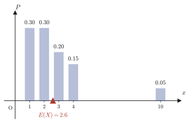
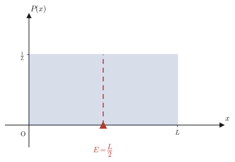
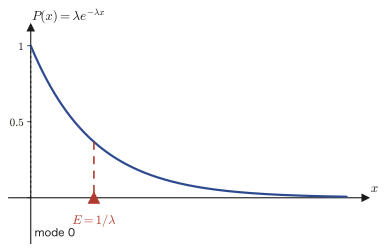

Chapter 14Expected Value — From Discrete to Continuous
The term “expected value” itself has already appeared in high school Mathematics A (a course in the Japanese high-school curriculum). The expected value of the number showing when a die is rolled once is $3.5$; computing the expected value of a lottery's prize amount to judge whether it is “worth the price”—you surely already know calculations like these. The main characters there were random variables that take only isolated values (discrete values), such as $1,2,\dots,6$. However, many of the quantities we want to handle in the natural world and in engineering practice are not like that. For example, “the speed of a gas molecule,” “the time until a radioactive atom decays,” and “the size of a measurement error” can, in principle, take any real value between $0$ and $\infty$. How should we define the expected value of such a continuous random variable?
In a word, the answer given in this chapter is “replace the sum ($\Sigma$) with an integral ($\int$).” This is not a mere ad hoc idea, however; it is an inevitable conclusion, obtained by following, step by step, the process by which $\Sigma$ turns into $\int$ in the limit $n\to\infty$. This idea, that “the limit of a sum becomes an integral,” has already been studied as Riemann sums in Section 5.3 (Chapter 5). In this chapter we reinterpret that idea in the language of probability and, starting from the definition of the discrete expected value, build the bridge plank by plank until we arrive at the expected value of a continuous random variable, $\displaystyle E=\int_{-\infty}^{\infty}xP(x)\,dx$.
- The definition of the expected value (mean) $\displaystyle E_n=\sum_{k=1}^n x_k P_k$ of a discrete random variable, and concrete calculations
- The new problem that arises when a random variable takes continuous values: why “the probability of taking that single point” ceases to be meaningful
- The idea of the probability density function $P(x)$: $P(x)$ itself is not a probability but a “density” that becomes the probability $P_k=P(x_k)(x_{k+1}-x_k)$ only when multiplied by the width of a small interval
- The Riemann-sum method, an application of Section 5.3 (Chapter 5): the bridge from a sum to an integral, $\displaystyle\lim_{n\to\infty}\sum_{k=1}^n f\!\left(\frac{k}{n}L\right)\frac{L}{n}=\int_0^L f(x)\,dx$
- Applying the Riemann-sum method above to both the normalization condition $\sum P_k=1$ and the expected value $\sum \frac{k}{n}L\cdot P_k$, to derive the expected value of a continuous random variable, $\displaystyle E=\int_0^L xP(x)\,dx$
- Practice in computing expected values for concrete density functions such as the uniform, linear, and exponential distributions, and a bridge to materials science and physics (the Maxwell distribution and the mean lifetime in radioactive decay)
Source notes: Yasuhide Mochizuki, Mathematics Notes: Fundamentals of Probability, pp. 5–6.
14.1 Discrete Random Variables and Expected Value
Rolling a die once, tossing a coin three times, taking part in a prize drawing once—an assignment of real numbers to the outcomes of such trials is called a random variable. For example, the “number rolled” on a die can be regarded as assigning the numerical values $1,2,3,4,5,6$ to the respective outcomes of the trial (a $1$ comes up, a $2$ comes up, …), so it is a kind of random variable. In general, we make the following definition.
Definition 14.1: Random variables and expected value (discrete case)
A quantity $X$ that, depending on the outcome of a trial, takes one of $n$ real values $x_1,x_2,\dots,x_n$ is called a (discrete) random variable. Write $P_k$ ($k=1,2,\dots,n$) for the probability that $X$ takes the value $x_k$. Then, by the definition of probability (Chapter 13), $P_k\ge 0$ and $\displaystyle\sum_{k=1}^n P_k=1$. We define the expected value (also called the expectation or the mean) $E_n$ of $X$ by the formula
\begin{equation} E_n=\sum_{k=1}^{n} x_k \cdot P_k \label{eq:14-discrete} \end{equation}that is, as the sum obtained by multiplying each value by the probability that it occurs and adding the results.
Let us first check, with concrete numbers, why this definition deserves to be called an “average.” For example, if $X$ takes the values $2,5,9$ each with probability $\frac13$, the expected value is $E_3=2\cdot\frac13+5\cdot\frac13+9\cdot\frac13=\frac{2+5+9}{3}=\frac{16}{3}$, which coincides with the “ordinary average” of elementary arithmetic, obtained by simply adding the $3$ values and dividing by $3$. In general, when a random variable takes $n$ values with equal probabilities (each $P_k=\frac1n$), Eq. \eqref{eq:14-discrete} becomes $E_n=\dfrac1n\displaystyle\sum_{k=1}^n x_k$, which is precisely the arithmetic mean familiar from elementary arithmetic. The expected value is nothing other than a generalization of this “simple average” in which each value is weighted by how likely it is to occur (its probability).
Intuition: The expected value is the “center of mass” of the distribution
Suppose we place a weight of $P_k$ at each position $x_k$ on the number line (the total of all the weights is $\sum P_k=1$). Then the balance point (center of mass) that supports all of these weights together is exactly the expected value $E_n=\sum x_k P_k$. This is exactly the same formula as the “center-of-mass formula for a system of particles” $\bar x=\dfrac{\sum m_k x_k}{\sum m_k}$ that you learn in physics, in the case where the total mass is normalized to $1$ ($\sum m_k=1$). Figure 14.1 shows an example in which the probability (= how heavy the weight is) differs from value to value. The value $10$ is large compared with the others, but the probability of taking it is only $0.05$, so we can read off from the figure that the center of mass (the expected value) is not pulled much toward $10$ and stays near $1,2$, where the probabilities are large.

Example 14.1: Expected value of the number rolled on a die
When one die is rolled once, find the expected value $E(X)$ of the number $X$ rolled.
Solution. The faces 1 through 6 of a die are equally likely to come up, so $x_k=k$ and $P_k=\dfrac16$ ($k=1,2,\dots,6$). Substituting into Eq. \eqref{eq:14-discrete} gives the following:
$$ E(X)=\sum_{k=1}^{6}k\cdot\frac16=\frac16(1+2+3+4+5+6)=\frac{21}{6}=\frac72=3.5 $$(SymPy check: the value of sum(k*Rational(1,6) for k in range(1,7)) is exactly $7/2$; they agree.) Although the number rolled takes only the integer values from $1$ to $6$, the expected value is the non-integer $3.5$—this is because the expected value represents not “one of the values that can actually occur” but “the average value over many repetitions.”
Example 14.2: Expected value of a prize drawing and the “fair entry fee”
In a certain prize drawing, the prizes and the probabilities of winning are fixed as in the following table.
| Prize $x_k$ (yen) | $100000$ | $10000$ | $1000$ | $0$ (no prize) |
|---|---|---|---|---|
| Probability $P_k$ | $\dfrac{1}{1000}$ | $\dfrac{1}{100}$ | $\dfrac{1}{10}$ | the rest |
Find the expected value of the prize $X$ in this drawing, and determine what entry fee for one play would be a “fair” amount at which neither the organizer nor the participant loses.
Solution. First we find the probability of “no prize” from the fact that the probabilities add up to $1$. Since $\displaystyle\sum_k P_k=1$, the probability of no prize is
$$ 1-\left(\frac{1}{1000}+\frac{1}{100}+\frac{1}{10}\right)=1-\frac{1+10+100}{1000}=1-\frac{111}{1000}=\frac{889}{1000} $$(indeed it is at least $0$, and the whole is consistently normalized to $1$). By Eq. \eqref{eq:14-discrete}, the expected value is
$$ E(X)=100000\cdot\frac{1}{1000}+10000\cdot\frac{1}{100}+1000\cdot\frac{1}{10}+0\cdot\frac{889}{1000}=100+100+100+0=300\ \text{yen} $$(Verified with SymPy: exact fraction arithmetic also gives $E(X)=300$.) The reason the expected value serves as a guide to a “fair entry fee” is as follows. If the entry fee is $c$ yen, the expected net profit per play (prize $-$ entry fee) is $E(X)-c$. If this is positive, the participants gain on average and the organizer loses. Conversely, if it is negative, the organizer gains. Therefore, the participants' average gain or loss when this drawing is repeated many times is exactly $0$ only when $c=E(X)=300$ yen, and only in that case can we call it “fair.” (The entry fees of actual lotteries and prize drawings are usually set higher than the expected value in order to cover operating costs.)
So far, we have not gone beyond the range of expected values studied in high school Mathematics A. The theme of this chapter shifts from here on to the following question: when the random variable $X$ takes not isolated values but continuous real values freely within some interval, how should the expected value be defined?
14.2 Probability Density Functions — Thinking in Intervals Rather Than at Points
Consider the time $X$ until a radioactive atom decays. In principle, $X$ can take any real number greater than or equal to $0$—it could be exactly $X=1.000\cdots$ seconds, or $X=1.0001$ seconds, or $X=\sqrt2$ seconds. Now, what happens if we consider “the probability that $X$ is exactly $1$ second”?
Caution: For a continuous random variable, the probability of a single point is usually $0$
The values that $X$ can take are distributed continuously (that is, without gaps) over the interval $[0,\infty)$. Suppose a probability greater than $0$ were assigned to the single point “exactly $1$ second.” Then there should be infinitely many other points with the same probability (unless the distribution of $X$ has some special symmetry, every real value is on an equal footing with every other real value), and adding up all of these probabilities would far exceed the total probability $1$. Therefore, for a continuous random variable, “the probability that $X$ takes exactly one particular value $x$” must be taken to be $0$, apart from special exceptions. Then how should we express quantitatively whether “$X$ is likely to take a value near $1$ second”?
The answer is to consider not “the probability of a single point” but “the probability of a small interval.” The original notes build up this idea in the concrete case of the interval $0\le x\le L$. Let us follow them.
Setup: Dividing the interval $[0,L]$ into $n$ equal parts
Suppose the random variable $X$ takes values in the interval $0\le x\le L$. Divide this interval into $n$ equal parts, and regard the random variable as a discrete random variable that takes (approximately) one of the following division points:
$$ X=\frac1n L,\ \frac2n L,\ \dots,\ \frac{k}{n}L,\ \dots,\ \frac{n}{n}L\ (=L) $$Let $P_k$ ($k=1,2,\dots,n$) be the probability that $X=\frac{k}{n}L$. This is exactly a discrete random variable in the sense of Definition 14.1 in Section 14.1, so the sum of all the probabilities satisfies
\begin{equation} \sum_{k=1}^{n} P_k=1 \label{eq:14-norm-discrete} \end{equation}The larger $n$ is, the narrower the spacing $\dfrac{L}{n}$ of the division points becomes, and the discrete approximation approaches the original continuous random variable.
Keeping this approximation, let us look more closely at the “content” of the probability $P_k$ of each interval. If we halve the interval width $\dfrac{L}{n}$ (that is, double $n$), it is natural to expect that the probability assigned to one small interval is also roughly halved. In other words, $P_k$ is roughly proportional to the width of the interval. So we extract the part corresponding to the proportionality constant as a function and define it as follows.
Definition 14.2: Probability density function
For a continuous random variable $X$, a function $P(x)$ that can be written in the form $P_k=P(x_k)\cdot(x_{k+1}-x_k)$ is called the probability density function of $X$ (often abbreviated to “density”). Here $x_k=\frac{k}{n}L$, and $x_{k+1}-x_k=\frac{L}{n}$ is the width of a small interval. That is, the relation
\begin{equation} P_k=P\!\left(\frac{k}{n}L\right)\cdot\frac{L}{n} \label{eq:14-pk-density} \end{equation}holds.
Caution: $P(x)$ itself is not a probability
This is the point in this chapter that is easiest to get wrong. $P(x)$ is a “probability density,” not “the probability at $x$.” As Eq. \eqref{eq:14-pk-density} shows, to obtain the actual probability $P_k$ one must multiply $P(x_k)$ by the interval width $\Delta x=\frac{L}{n}$. This has exactly the same structure as “density” in physics (mass per unit volume)—the density $\rho$ itself is not a mass; only after multiplying by the volume does it become a mass $m=\rho V$. Note also that the dimension (unit) of $P(x)$ is not “probability” but “probability/length.” In Figure 14.2, too, $P(x_k)$ is merely the height of a rectangle, while the actual probability $P_k$ is represented by the area (height × width) of that rectangle.
If we substitute Eq. \eqref{eq:14-pk-density} into Eq. \eqref{eq:14-norm-discrete}, the normalization condition is rewritten in terms of the density function as follows.
\begin{equation} \sum_{k=1}^{n} P_k=\sum_{k=1}^{n} \underbrace{P\!\left(\frac{k}{n}L\right)}_{\text{probability density}}\cdot \frac{L}{n} = 1 \label{eq:14-norm-density} \end{equation}(In the original notes, a wavy line is drawn under $P\!\left(\frac{k}{n}L\right)$ and annotated “probability density.” The position of the wavy line is exactly where the notes emphasize that $P(x)$ is not the probability itself but a density.) Eq. \eqref{eq:14-norm-density} is still only an approximate equation for finite $n$. Investigating what happens in the limit $n\to\infty$ is the task of the next section, Section 14.3.
Example 14.3: A uniform density $P(x)=1$ (on the interval $[0,1]$)
Suppose that on the interval $[0,1]$ ($L=1$) the probability density is the constant $P(x)=1$. When this interval is divided into $n$ equal parts, compute the left-hand side $\sum_{k=1}^n P_k$ of Eq. \eqref{eq:14-norm-density}, and verify that it is always $1$ regardless of the value of $n$.
Solution. Since $P(x)=1$ (a constant), we have $P\!\left(\frac{k}{n}\right)=1$. Hence
$$ \sum_{k=1}^{n}P_k=\sum_{k=1}^{n}P\!\left(\frac{k}{n}\right)\cdot\frac1n=\sum_{k=1}^{n}1\cdot\frac1n=n\cdot\frac1n=1 $$which shows that it is indeed always $1$ regardless of $n$ (without even taking the limit $n\to\infty$). (SymPy check: simplifying summation(1/n,(k,1,n)) gives exactly $1$.) This example is special: precisely because the density is constant, independent of position, no approximation error arises at all even for finite $n$. When the density varies with $x$, as in the next example, $\sum P_k$ in general deviates slightly from $1$ for finite $n$, and becomes exactly $1$ only in the limit $n\to\infty$.
Example 14.4: A linearly increasing density $P(x)=\dfrac{2}{L^2}x$ (on the interval $[0,L]$, with $L=2$)
Suppose that on the interval $[0,2]$ the probability density is $P(x)=\dfrac{2}{L^2}x=\dfrac12 x$ (for the case $L=2$). (a) For each of $n=5,10,100,1000$, compute $\sum_{k=1}^n P_k$ and observe how it approaches $1$ as $n\to\infty$. (b) Separately from the computation with $n\to\infty$, compute the integral $\int_0^L P(x)\,dx$ directly, and verify that for general $L$ its value is always $1$, independent of $L$.
Solution. (a) Since $x_k=\dfrac{2k}{n}$ and the width is $\dfrac{2}{n}$,
$$ \sum_{k=1}^{n}P_k=\sum_{k=1}^{n}P\!\left(\frac{2k}{n}\right)\cdot\frac2n=\sum_{k=1}^{n}\frac12\cdot\frac{2k}{n}\cdot\frac2n=\frac{2}{n^2}\sum_{k=1}^n k=\frac{2}{n^2}\cdot\frac{n(n+1)}{2}=\frac{n+1}{n} $$(In the last step we used the formula $\displaystyle\sum_{k=1}^n k=\frac{n(n+1)}{2}$ from high school mathematics.) Substituting $n=5,10,100,1000$ gives $\frac65=1.2$, $\frac{11}{10}=1.1$, $\frac{101}{100}=1.01$, and $\frac{1001}{1000}=1.001$, respectively (verified with SymPy as exact fractions), so the sums indeed approach $1$. For finite $n$, however, the sum is always slightly larger than $1$—this is because the density is an increasing function, so using the value $P(x_k)$ at the right endpoint of each small interval as the height slightly overestimates the true area.
(b) For general $L$,
$$ \int_0^L P(x)\,dx=\int_0^L \frac{2}{L^2}x\,dx=\frac{2}{L^2}\left[\frac{x^2}{2}\right]_0^L=\frac{2}{L^2}\cdot\frac{L^2}{2}=1 $$(Verified with SymPy for general $L$ (a symbol declared positive, $L>0$).) The value is always $1$ regardless of $L$—this is because the density function is constructed in the first place so that its integral over the whole interval is $1$ (the proportionality constant $\frac{2}{L^2}$ is chosen precisely for that purpose). The numerical computation in (a) is nothing other than an approximation of this integral by the Riemann-sum method (next section), and it is expected to agree with the exact value $1$ of (b) as $n\to\infty$.
14.3 The Riemann-Sum Method — Reading the Limit of a Sum as an Integral
Eq. \eqref{eq:14-norm-density} is nothing more than a sum of the areas of a finite number of rectangles obtained by dividing the interval into $n$ equal parts. Once we notice that the limit of this sum as $n\to\infty$ is exactly the definite integral as the limit of Riemann sums (Definition 5.1) that we studied in Section 5.3 (Chapter 5), the whole picture becomes clear at once. Let us step away from probability for a moment and review the same operation for a general function $f(x)$.
Formula 14.1: The Riemann-sum method
For a function $f(x)$ that is continuous on the interval $[0,L]$, if we divide the interval into $n$ equal parts and form the Riemann sum by choosing the right endpoint $x_k=\dfrac{k}{n}L$ ($k=1,\dots,n$) of each small interval as its representative point, then
\begin{equation} \lim_{n\to\infty}\sum_{k=1}^{n} f\!\left(\frac{k}{n}L\right)\frac{L}{n} = \int_0^L f(x)\,dx \label{eq:14-riemann} \end{equation}holds.
Why Formula 14.1 holds
This is not a new fact. It is merely Definition 5.1 of Chapter 5 (the definition of the definite integral by Riemann sums) applied to the special case of an equally spaced partition, $\Delta x_k=\frac{L}{n}$ (constant, independent of $k$), with representative points $t_k=x_k=\frac{k}{n}L$ (the right endpoint of each small interval). The value of a definite integral defined with a general partition and general representative points converges to the same value regardless of how the interval is partitioned or how the representative points are chosen (Section 5.3 of Chapter 5, the squeeze argument with upper and lower sums), so even if we make the most convenient choice, an equally spaced partition with right-endpoint representative points, we arrive at the same limit $\int_0^L f(x)\,dx$. That is, as $n$ increases, the sum on the left-hand side of Eq. \eqref{eq:14-riemann} approximates the area under the graph of $y=f(x)$ by thin rectangles, and in the limit where the rectangles become thinner and more numerous, it coincides exactly with the true area (= the definite integral) (Figure 14.3).
Example 14.5: Converting the limit of a sum into an integral with the Riemann-sum method ($f(x)=x$)
Using the Riemann-sum method, rewrite the limit $\displaystyle\lim_{n\to\infty}\sum_{k=1}^{n}\frac{k}{n}\cdot\frac1n$ as a definite integral and find its value.
Solution. We regard the sum $\displaystyle\sum_{k=1}^n\frac{k}{n}\cdot\frac1n=\sum_{k=1}^n\left(\frac{k}{n}\right)\frac1n$ as the sum $\displaystyle\sum_{k=1}^n f\!\left(\frac{k}{n}\right)\frac1n$ in Formula 14.1 with $L=1$ and $f(x)=x$. Hence
$$ \lim_{n\to\infty}\sum_{k=1}^{n}\frac{k}{n}\cdot\frac1n=\int_0^1 x\,dx=\left[\frac{x^2}{2}\right]_0^1=\frac12 $$holds. (Check: using the formula $\sum_{k=1}^n k=\frac{n(n+1)}{2}$ from high school mathematics, the left-hand side becomes $\dfrac{1}{n^2}\cdot\dfrac{n(n+1)}{2}=\dfrac{n+1}{2n}$, and we have verified with SymPy that its limit as $n\to\infty$ agrees exactly with $\frac12$.) This result also serves as an alternative proof, by the Riemann-sum method, of the fact that the area of the right triangle (with vertices $(0,0),(1,0),(1,1)$) is $\frac12$.
Formula 14.1 is a general tool that can be used with any continuous function $f(x)$. In the next section we return to the discussion of probability densities and apply it in two ways: to the case $f(x)=P(x)$ and to the case $f(x)=xP(x)$.
14.4 Expected Value of Continuous Random Variables
First, let us apply Formula 14.1 to the normalization condition (Eq. \eqref{eq:14-norm-density}). Taking $f(x)=P(x)$, we have
$$ \sum_{k=1}^{n} P_k=\sum_{k=1}^{n} P\!\left(\frac{k}{n}L\right)\cdot\frac{L}{n} \ \xrightarrow[n\to\infty]{}\ \int_0^L P(x)\,dx $$The left-hand side was always $1$, regardless of the value of $n$ (by Eq. \eqref{eq:14-norm-discrete}). Therefore the limit on the right-hand side must also be $1$:
\begin{equation} \lim_{n\to\infty}\sum_{k=1}^{n} P_k = \lim_{n\to\infty}\sum_{k=1}^{n} P\!\left(\frac{k}{n}L\right)\cdot\frac{L}{n} = \int_0^L P(x)\,dx = 1 \label{eq:14-norm-integral} \end{equation}This is the expression, in terms of an integral, of the normalization condition that a probability density function must satisfy. “Integrating the density over the whole interval always gives $1$”—this is just as we also confirmed numerically in Example 14.3 and Example 14.4.
We now apply the same tool to the formula for the expected value as well. Applying Definition 14.1 (Eq. \eqref{eq:14-discrete}) to the present setting, we find that the expected value in the discrete approximation is $\displaystyle\sum_{k=1}^n\frac{k}{n}L\cdot P_k$. Substituting Eq. \eqref{eq:14-pk-density} ($P_k=P\!\left(\frac kn L\right)\frac Ln$) here and taking the limit $n\to\infty$, we obtain
$$ E=\lim_{n\to\infty}\sum_{k=1}^{n} \frac{k}{n}L\cdot P_k =\lim_{n\to\infty}\sum_{k=1}^{n} \underbrace{\frac{k}{n}L\cdot P\!\left(\frac{k}{n}L\right)}_{=f(k/n\,L)}\cdot\frac{L}{n} $$This is nothing other than the sum in Formula 14.1 for the case in which we put $f(x)=x\,P(x)$ (the part under the brace is the value of $f$ at the representative point $x=\frac kn L$). Hence, applying Formula 14.1 just as it stands, we obtain
\begin{equation} E=\lim_{n\to\infty}\sum_{k=1}^{n} \frac{k}{n}L\cdot P\!\left(\frac{k}{n}L\right)\frac{L}{n} = \int_0^L x\,P(x)\,dx \label{eq:14-expectation-integral} \end{equation}This is the expected value for a continuous random variable. Please confirm that, in the discrete sum $\sum x_k P_k$ (Eq. \eqref{eq:14-discrete}), “$x_k$” is replaced by the integration variable $x$, “$P_k$” by “density × infinitesimal width $P(x)\,dx$,” and “$\Sigma$” by “$\int$,” in one-to-one correspondence.
Theorem 14.1: Expected value of a continuous random variable
Suppose that a random variable $X$ takes values continuously in the interval $[0,L]$ and has a probability density function $P(x)$ (normalization condition $\int_0^L P(x)\,dx=1$, $P(x)\ge0$). Then the expected value of $X$ is given by
\begin{equation} E=\int_0^L x\,P(x)\,dx \label{eq:14-key} \end{equation}The same formula also holds without change when the interval is not limited to $[0,L]$ but extends over the whole real line $(-\infty,\infty)$ (a more general setting, which includes the case of the interval $[0,L]$ if the density is regarded as $P(x)=0$ for $x\notin[0,L]$), and it can be written as
$$ E=\int_{-\infty}^{\infty} x\,P(x)\,dx $$(This is the formula we previewed in the opening paragraph of this chapter.)
Intuition: The integral is also a “center of mass” formula
In Section 14.1 we said that the discrete expected value is the center of mass of the distribution. The same interpretation carries over unchanged to the continuous case. If we imagine mass spread continuously (without gaps) along the number line according to the density $P(x)$, then $E=\int xP(x)\,dx$ is the center of mass of this “continuous mass distribution.” If you have seen the center of mass of a continuous body written as $\bar x=\frac{\int x\,\rho(x)\,dx}{\int \rho(x)\,dx}$ in high school physics and university mechanics, then the present formula for the expected value is the case in which the denominator $\int\rho\,dx$ is exactly $1$ by the normalization condition.
Example 14.6: Expected value of the uniform distribution
Consider a random variable that takes values with the same density everywhere in the interval $[0,L]$ (the uniform distribution). From the normalization condition, the density is $P(x)=\dfrac1L$ ($0\le x\le L$). Find the expected value of this random variable.
Solution. Substituting $P(x)=\frac1L$ into Eq. \eqref{eq:14-key} gives
$$ E=\int_0^L x\cdot\frac1L\,dx=\frac1L\left[\frac{x^2}{2}\right]_0^L=\frac1L\cdot\frac{L^2}{2}=\frac L2 $$(Verified with SymPy for general $L$.) If every point of the interval $[0,L]$ is equally likely, then the expected value being exactly the midpoint $\frac L2$ of the interval agrees perfectly with our intuition (Figure 14.4).

Example 14.7: Expected value of a linearly increasing density (comparison with the uniform distribution)
Find the expected value of the random variable with the density $P(x)=\dfrac{2}{L^2}x$ ($0\le x\le L$) treated in Example 14.4, and compare it with the expected value of the uniform distribution of Example 14.6 (on the same interval $[0,L]$).
Solution. Substituting into Eq. \eqref{eq:14-key} gives
$$ E=\int_0^L x\cdot\frac{2}{L^2}x\,dx=\frac{2}{L^2}\int_0^L x^2\,dx=\frac{2}{L^2}\left[\frac{x^3}{3}\right]_0^L=\frac{2}{L^2}\cdot\frac{L^3}{3}=\frac{2L}{3} $$(Verified with SymPy.) Comparing this with the expected value $\frac L2$ of the uniform distribution (Example 14.6), we have $\frac{2L}{3}\gt\frac L2$. This agrees with the intuition that, because this density $P(x)=\frac{2}{L^2}x$ increases monotonically with $x$—that is, the density is higher toward the right of the interval (the side where $x$ is closer to $L$)—the expected value (the center of mass) is likewise pulled to the right of the midpoint of the interval. In general, the expected value is pulled toward the side where the density is higher—we will confirm this property once more in the exercises of Section 14.6.
14.5 Advanced Topic: Expectation Values in Materials Science and Physics
The form we built up in this chapter, “integrate density $\times$ variable $\times$ $dx$,” appears everywhere in physics and materials science. These are advanced topics that do not appear in the original notes, but for the sake of precocious readers we will introduce just two of them.
Example 14.8: Expected value of the exponential distribution (integration by parts)
Phenomena in which the probability that an event occurs in the next instant, given the condition of having “survived up to a certain moment,” is constant in time—such as the time until a radioactive atom decays or the time until a light bulb fails—are known to follow the exponential distribution, whose density function is $P(x)=\lambda e^{-\lambda x}$ ($x\ge0$, where $\lambda>0$ is a constant). Find the expected value $E=\displaystyle\int_0^\infty x\,P(x)\,dx$ of this distribution.
Solution. First, let us confirm that $P(x)$ is indeed normalized as a density: $\displaystyle\int_0^\infty \lambda e^{-\lambda x}\,dx=\Big[-e^{-\lambda x}\Big]_0^\infty=0-(-1)=1$ (since $e^{-\lambda x}\to0$ as $x\to\infty$, because $\lambda>0$). Next, we compute the expected value following Eq. \eqref{eq:14-key}.
$$ E=\int_0^\infty x\cdot\lambda e^{-\lambda x}\,dx $$Since this integral has the form of a product of $x$ and $e^{-\lambda x}$, we use integration by parts (a technique that uses $\int u'v=uv-\int uv'$; it is one of the first integration techniques one learns at university). Let $u=x$ and $v'=\lambda e^{-\lambda x}$. Then $u'=1$ and $v=-e^{-\lambda x}$ (we only need to integrate $v'$). Hence
$$ E=\Big[x\cdot(-e^{-\lambda x})\Big]_0^\infty-\int_0^\infty 1\cdot(-e^{-\lambda x})\,dx =\Big[-xe^{-\lambda x}\Big]_0^\infty+\int_0^\infty e^{-\lambda x}\,dx $$The first term is $0$ at $x=0$, and as $x\to\infty$ we have $xe^{-\lambda x}\to0$ (because the exponential function $e^{-\lambda x}$ approaches $0$ faster than any power of $x$), so the first term is $0$ as a whole. The second term is
$$ \int_0^\infty e^{-\lambda x}\,dx=\left[-\frac{1}{\lambda}e^{-\lambda x}\right]_0^\infty=0-\left(-\frac1\lambda\right)=\frac1\lambda $$so, in the end, we obtain
$$ E=0+\frac1\lambda=\frac{1}{\lambda} $$(It has also been verified that SymPy's integrate(x*lam*exp(-lam*x),(x,0,oo)) agrees exactly with $1/\lambda$ under the assumption $\lambda>0$.) Since $\lambda$ is a constant representing “the rate at which an event occurs per unit time” (the decay rate or failure rate), it is natural that its reciprocal $1/\lambda$ is “how long it takes on average” (the mean lifetime). Figure 14.5 shows the graph of the density $P(x)$ and the position of the expected value. The density is largest at $x=0$, but the expected value (the mean) is located not at $x=0$ but away from it, at $x=1/\lambda$. Note that the “most likely value” (the mode) and the “mean” (the expected value) do not in general coincide unless the distribution is symmetric.

Application: The Maxwell distribution and the “average” in statistical mechanics
In the kinetic theory of gases, it is known that the speed $v$ of the molecules in a gas at temperature $T$ differs from one molecule to the next, and that the speeds are scattered according to a probability density $P(v)$ ($v\ge0$) called the Maxwell–Boltzmann distribution. The average speed $\langle v\rangle$ of the gas molecules (in statistical mechanics it is customary to write an expectation value with the symbol $\langle\ \rangle$ rather than $E$) is defined, in exactly the same form as in this chapter, by
$$ \langle v\rangle=\int_0^\infty v\,P(v)\,dv $$Similarly, if we consider the average kinetic energy per molecule, $\langle E_{\text{molecule}}\rangle=\int E\,P(E)\,dE$, the fundamental theorem of statistical mechanics (the equipartition theorem of energy) leads to the famous relation $\langle E_{\text{molecule}}\rangle=\frac32 k_{\mathrm B}T$ ($k_{\mathrm B}$: the Boltzmann constant). This is the result that the same amount of energy, proportional to the temperature, is distributed on average to each degree of freedom of the motion of a gas molecule (there are three, one for each of the $x,y,z$ directions). (The justification of this formula rests on the Boltzmann distribution, which you will study in statistical mechanics, and it goes beyond the scope of this book, so here we present only the result.) The temperature of a gas is, in fact, nothing other than the expectation value of the kinetic energy of its molecules. In materials science, too, when we deal with the thermal vibrations of atoms in a crystal or the energy distribution of electrons in a semiconductor, the idea of the “expectation value” appears over and over in the same form. Concrete calculations of these will be taken up again when you study statistical mechanics and quantum statistics.
14.6 Summary and Exercises
14.6.1 Summary
- Discrete expected value: When a random variable $X$ takes the values $x_1,\dots,x_n$ with probabilities $P_1,\dots,P_n$ ($\sum P_k=1$), the expected value is $E_n=\sum_{k=1}^n x_k P_k$ (Definition 14.1). It is a “simple average” weighted by probabilities, and it is also the “center of mass” of the distribution.
- Probability density function: For a continuous random variable, the probability of taking any single point is ordinarily $0$. We therefore introduce a function $P(x)$ (the probability density) that expresses the probability of a small interval $[x_k,x_{k+1}]$ as $P_k=P(x_k)\Delta x$ (Definition 14.2). $P(x)$ itself is not a probability; it is a “density” that becomes a probability only when multiplied by the width.
- Riemann-sum method (Formula 14.1): $\displaystyle\lim_{n\to\infty}\sum_{k=1}^n f\!\left(\frac kn L\right)\frac Ln=\int_0^L f(x)\,dx$. This is exactly the definition of the definite integral by Riemann sums in Chapter 5.
- Applying the Riemann-sum method to $f=P$ gives the normalization condition $\int_0^L P(x)\,dx=1$ (Eq. \eqref{eq:14-norm-integral}), and applying it to $f(x)=xP(x)$ gives the expected value of a continuous random variable (Theorem 14.1):
- The expected value of the uniform distribution $P(x)=\frac1L$ is the midpoint of the interval, $\frac L2$. If there is a side where the density is higher, the expected value is pulled toward that side (Example 14.7). The expected value of the exponential distribution $P(x)=\lambda e^{-\lambda x}$ is $\frac1\lambda$ (Example 14.8). In general, the expected value and the “most likely value” (the mode) do not coincide.
- The form of the expected value, “integrate density $\times$ variable $\times dx$,” appears everywhere in materials science and physics, as in the Maxwell distribution and the average energy in statistical mechanics.
14.6.2 Exercises
Exercise 14.1: Expected value of the sum of the numbers on two dice
When two dice are thrown at the same time, find the expected value $E(X)$ of the sum $X$ of the numbers shown.
Hint: There are $6\times6=36$ possible cases in all. You may count the number of cases in which the sum is $2$, the number in which it is $3$, and so on, and substitute them into Definition 14.1; or you may use the fact that “the expected value of the number on one die is $\frac72$ by Example 14.1” together with the linearity of the expected value ($E(X_1+X_2)=E(X_1)+E(X_2)$; this is not proved in this chapter, but it is a property that holds naturally if we regard the number on each die as a random variable).
Exercise 14.2: Expected value and spread of a random variable taking three values (Advanced)
Suppose that a random variable $X$ takes the $3$ values $2,5,9$, each with equal probability $\frac13$. (a) Find the expected value $E(X)$. (b) Find $E(X^2)$ (the expected value of $X^2$; it can be computed from the values $x_k^2$ that $X^2$ takes and their probabilities $P_k$, by a formula of the same form as Definition 14.1). (c) The variance is a quantity that expresses how widely the data are scattered around the expected value, and it is properly defined as $V(X)=E\big[(X-E(X))^2\big]$ (the expected value of the square of how far each value is from the expected value; we do not go deeply into it in this chapter, but it is one of the most important quantities in statistics). Show that expanding this definition gives the formula $V(X)=E(X^2)-\{E(X)\}^2$, which is convenient for computation, and use the results of (a) and (b) to find the value of $V(X)$.
Hint: The values taken by $X^2$ are $4,25,81$, and each occurs with the same probability $\frac13$ as the original value. For the expansion in (c), expand $E\big[(X-E(X))^2\big]=E\big(X^2-2XE(X)+\{E(X)\}^2\big)$ term by term using the linearity of the expected value (since $E(X)$ is a constant, $E\big(2X\cdot E(X)\big)=2E(X)\cdot E(X)$).
Exercise 14.3: Normalization constant and expected value of a density function
Suppose that on the interval $[0,2]$ the probability density is $P(x)=cx$ ($c$ is a constant). (a) Find the constant $c$ from the normalization condition $\int_0^2 P(x)\,dx=1$. (b) Find the expected value of a random variable with this density.
Hint: For (a) use Eq. \eqref{eq:14-norm-integral}, and for (b) use Eq. \eqref{eq:14-key}. Both reduce to computing the definite integral $\int_0^2 x^m\,dx$ ($m=1,2$).
Exercise 14.4: Practice with the Riemann-sum method ($f(x)=x^2$)
Using the Riemann-sum method (Formula 14.1), convert the limit $\displaystyle\lim_{n\to\infty}\sum_{k=1}^{n}\left(\frac{k}{n}\right)^2\cdot\frac1n$ into a definite integral and find its value.
Hint: Just repeat exactly the same procedure as in Example 14.5 (the case $f(x)=x$) for $f(x)=x^2$. You can also check your answer by computing the sum directly with the high-school formula $\sum_{k=1}^n k^2=\frac{n(n+1)(2n+1)}{6}$ and then taking the limit $n\to\infty$.
Exercise 14.5: Mean lifetime and half-life of radioactive decay
Suppose that the time $T$ until a single atom of a certain radioactive isotope decays follows the exponential distribution with density $P(t)=\lambda e^{-\lambda t}$ ($t\ge0$). (a) Using the result of Example 14.8, express the mean lifetime $\tau=E(T)$ in terms of $\lambda$. (b) Find the time for the number of atoms to decrease to exactly half (the half-life $T_{1/2}$) by solving the equation $e^{-\lambda T_{1/2}}=\frac12$, and express its relation to $\tau$ by a formula. (c) When $\tau=10$ (the unit of time is arbitrary), find an approximate value of $T_{1/2}$.
Hint: In (b), take the natural logarithm of both sides. Note that $\ln\frac12=-\ln2$.
Exercise 14.6: Comparing the expected values of the uniform and triangular distributions
On the interval $[0,L]$, compare the following two densities: (i) the uniform distribution $P(x)=\frac1L$, and (ii) the “triangular” density $P(x)=\dfrac2L\left(1-\dfrac xL\right)$, which takes its maximum value at $x=0$ and decreases linearly until $x=L$. (a) Verify that the density (ii) satisfies the normalization condition $\int_0^L P(x)\,dx=1$. (b) Find the expected value of (ii) and compare it with the expected value $\frac L2$ of (i) (Example 14.6). (c) How is the result of (b) consistent with the property stated in Example 14.7 that “the expected value is pulled toward the side where the density is higher”? Explain, referring to Figure 14.4.
Hint: Both (a) and (b) reduce to computing $\int_0^L x^m\,dx$ ($m=0,1,2$). For (c), note that the density (ii) is largest near $x=0$.
14.6.3 References
- Yasuhide Mochizuki, Mathematics Notes: Fundamentals of Probability (handwritten lecture notes, in Japanese). The source of this chapter.
- Junkichi Satsuma, Kakuritsu, Tōkei [Probability and Statistics], Iwanami Shoten, 1989 (in Japanese).
- W. Feller, An Introduction to Probability Theory and Its Applications, Vol. I, 3rd ed. (Wiley, 1968).
- Ryogo Kubo (ed.), Daigaku Enshū: Netsugaku, Tōkei Rikigaku [University Exercises: Thermodynamics and Statistical Mechanics], revised ed., Shōkabō, 1998 (in Japanese). A standard exposition of the Maxwell distribution and of statistical-mechanical averages.
Related simulator: Expected Value Simulator (you can run it to see how discrete and continuous probability distributions relate to their expected values).